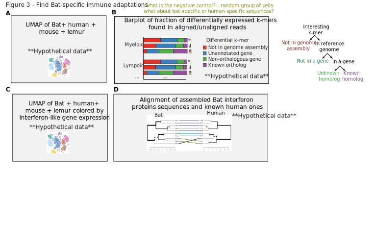
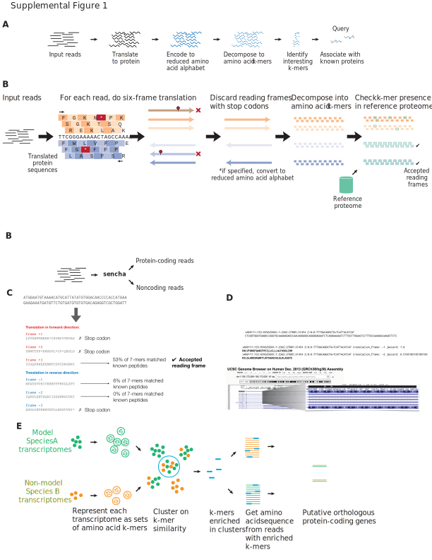
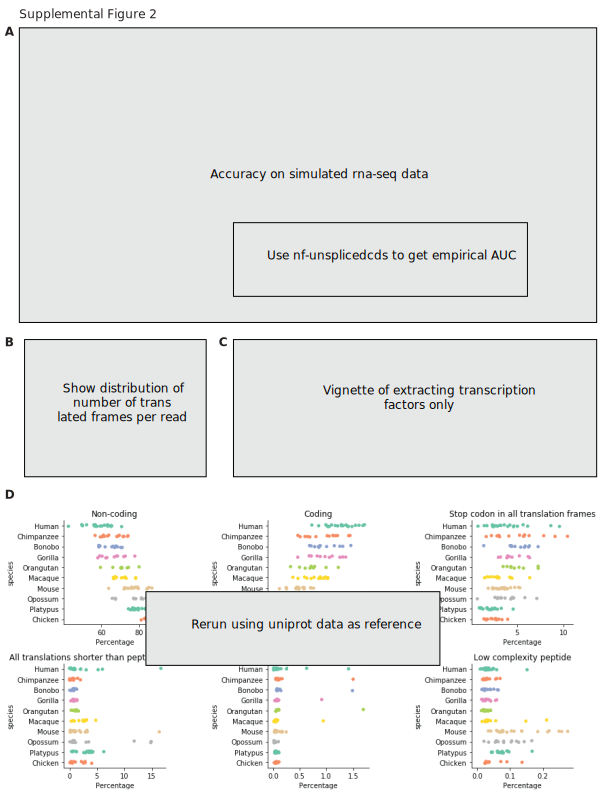
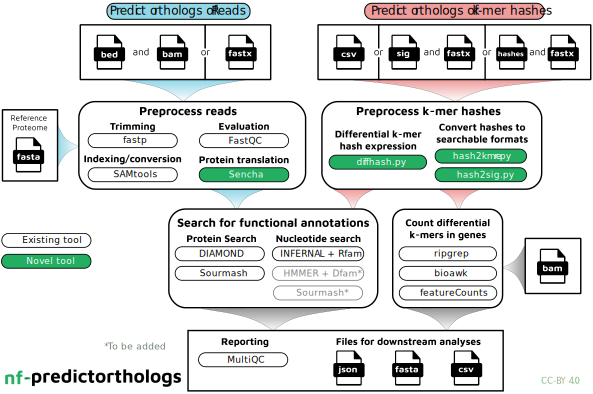

N. Tessa Pierce 0000-0002-2942-5331
· bluegenes
· saltyscientist
Department of Population Health and Reproduction, University of California, Davis
· Funded by NSF 1711984
Saba Nafees 0000-0002-3292-7703
· snafees
· sabanafeesTTU
Data Sciences Platform, Chan Zuckerberg Biohub; Department of Biological Sciences, Texas Tech University; Department of Mathematics & Statistics, Texas Tech University
C. Titus Brown 0000-0001-6001-2677
· ctb
· ctitusbrown
Department of Population Health and Reproduction, University of California, Davis
· Funded by Moore Foundation GBMF4551
We introduce sencha, a novel computational method for extracting high-confidence protein-coding sequences from RNA-seq data into non-coding reads and protein-coding reads which can then be manipulated to reduced amino acid alphabets which are directly comparable across large evolutionary distances.
As the direct assignment of protein-coding sequence skips both traditional alignment and gene orthology assignment it can a) be applied to transcriptomes from organisms with no or poorly annotated genomes, and b) identify putative functions of protein sequences contributing to shared cell types.
Thus, we first leverage short 15-20-long amino acid words in reduced amino acid alphabets to identify homologous cell types across organisms without the need for a reference genome.
Second, we use the homologous cell types from before to find de novo homologous genes across all species, within similar cell types.
We applied these methods to the problem of understanding the unique ability of bats to harbor zoonotic diseases, especially coronaviruses such as SARS, MERS, SARS-CoV-2, an issue of fundamental importance to human health.
However, important immunological genes such as Interferons have not been adequately identified in the bat genome and thus that aspect of bat biology could not be identified.
With our methods, we were able to detect widespread expression of interferon genes in immune tissues of the SARS reservoir species, and the purported SARS-COV-2 species Rhinolophus sinicus (Chinese horseshoe bat) single-cell RNA-seq transcriptomes, as compared to human tissues.
The R. sinicus interferon genes were slightly different from human interferon genes […]
Additionally, we were able to identify a lymphoid-like cell population in the early chordate Botryllus schlosseri bulk RNA-seq, an early chordate (divergence ~684 millions of years ago), and validate the expression of the lymphoid genes using [qRT-PCR].
By enabling analyses across divergent species’ transcriptomes in a genome-, gene annotation-, and orthology-agnostic manner, sencha illustrates the potential of non-model organisms in building the cell type evolutionary tree of life.
Introduction
Identifying cell types in multicellular animals (metazoans) enables studying the broad array of cell types available to living creatures, and can help understand human disease by seeing cell types that are adjacent to human “normal” cell types, but resemble human disease cell types.
Current methods for identifying cell types use single-cell RNA-sequencing, however, these methods require three things: (1) high-quality genome assembly, (2) high-quality predicted gene annotations and (3) high-quality orthologous gene mappings across species.
However, the task of identifying even known cell types in species with poorly annotated genomes is nontrivial, as 99.999% of the predicted 8.7 million Eukaryotic species on Earth have no submitted genome assembly [1,2] and even fewer have gene predictions and orthologous gene mappings to human, which remains an open problem [3,4].
But, we can nontheless generate single-cell RNA-seq data from these species with poorly annotated genomes, and if we can leverage the annotations from existing organisms, we can
Thus, there is an unmet need to quantitatively compare single-cell transcriptomes across species, without the need for orthologous gene mapping, gene annotations, or a reference genome.
Short, \(k\)-long sequence substrings, or \(k\)-mers, have been proposed for clustering single cells [5] and here we implemented \(k\)-mers from putatitvely translated RNA-seq reads with reduced amino acid alphabets [???,6,6,7,8], to find shared cell types across species, and further identify de novo orthologous genes by querying the predicted protein sequences to a reference database.
This method relies solely on divergence time between species, which we show can be estimated from RNA-seq nucleotide \(k\)-mers (Supplemental Figure [???]).
As the direct assignment of protein-coding sequence skips both traditional alignment and gene orthology assignment it can a) be applied to transcriptomes from organisms with no or poorly annotated genomes, and b) identify putative functions of protein sequences contributing to shared cell types.
As the direct assignment of protein-coding sequence skips both traditional alignment and gene orthology assignment it can a) be applied to transcriptomes from organisms with no or poorly annotated genomes, and b) identify putative functions of protein sequences contributing to shared cell types.
We benchmark the genome-agnostic method on the Quest for Orthologs Opisthokonta dataset, showing that \(k\)-mers from reduced amino acid alphabets are sufficient to estimate orthology.
Using human amino acid sequences, we show that one can extract putative protein-coding reads from 35 Opisthokonta species in Quest for Orthologs, and present the best \(k\)-mer size and alphabet for different divergence times.
We first apply this method on a bulk comparative transcriptomic dataset consisting of nine amniote species and six tissues [11], showing that we achieve similar clustering results as using only reads mapping to 1:1 orthologs or Hierarchical Orthologous Groups (HOGs) [12,13,14] of protein-coding genes, but are able to resolve … which can only be seen by using the \(k\)-mer method.
We further demonstrate the utility of this method by comparing transcriptomes from organisms diverged by approximately 676 million years [15]: a single-cell atlas of a model organism, mouse from Tabula Muris Senis[16], and bulk RNA-seq from Botryllus schlosseri[17], a colonial tunicate which exhibits cell populations similar to the myeloid immune lineage.
Across this evolutionary distance, only XX 1:1 orthologous genes exist as found by … and XX HOGs via orthologous matrix (OMA) [18,19]
We show that the myeloid-like cells from B. schlosseri not only cluster with the myeloid immune cells from Tabula Muris Senis[20], we also find de novo orthologous genes, such as …
We find that using \(k\)-mers has the advantage of resolving … in comparison to using read counts from 1:1 gene orthologs.
Using \(k\)-mers, we were able to resolve cell types … , which was hidden using read counts alone.
Thus, we have shown the reference-free method using the \(k\)-mers from single cells is a novel, annotation-agnostic method for comparing cells across species that is capable of identifying cell states unique to a particular organism, helping to build the cell type evolutionary tree of life.
Similar to \(k\)-mer based approaches for transcript quantification [21,22,23], we implemented \(k\)-mer based gene expression analyses across species, but instead of using DNA \(k\)-mers, our critical innovation was using translated protein \(k\)-mers.
We utilized sequence bloom trees (SBTs) [24] using a bottom-up approach to build them similar to previous work [25,26] to ensure localization of new datasets, meaning, if two leaves share a parent, they are guaranteed to be more similar than two leaves that do not share a parent.
For widespread accessibility and usage, we implemented sencha into two distinct Nextflow pipelines following software best practices such as testing and continuous integration: (1) nf-core/kmermaid to compare translated transcriptomes across divergent species, and (2) czbiohub/nf-predictorthologs to infer functions of translated sequences.
Results
Figure 1: Figure 1.
A. Overview of transcriptomic datasets from three species: Homo sapiens (human), Rhinolophus sinicus (Chinese horseshoe bat), and the early chordate Botryllus schlosseri. For B. schlosseri, we have FACS-purified bulk RNA-seq populations, including circulating cell types similar to mammalian hematopoietic stem cells (HCS), lymphoid, and myeloid populations. For H. sapiens and R. sinicus, we have droplet-based single-cell RNA-seq data for bone marrow, lung, intestine, spleen, thymus, and whole blood tissues.
B. Overview of computational method. First, in the kmermaid pipeline, RNA-seq reads are translated to protein via the Sencha tool, then converted to a reduced amino acid alphabet, decomposed into \(k\)-mers, and then those \(k\)-mers are subsampled. Next, the nf-predictorthologs pipeline performs differential \(k\)-mer expression, much like differential gene expression, to find \(k\)-mers that are enriched in a population, and queries for those differential \(k\)-mers in databases to identify them.
C. Reduced amino acid alphabets allow for flexibility in sequence \(k\)-mers. The Dayhoff 6-letter and hydrophobic-polar 2-letter encodings are reduced alphabets that retain biochemical properties of amino acids that have been conserved over many years. The single amino acid change of isoleucine (I) to leucine (L) in the protein sequence PRTEINSEQ to PRTELNSEQ, but has no effect in the Dayhoff or hydrophobic-polar encodings.
D. Given a \(k\)-mer of interest, we can categorize the \(k\)-mer into several bins: (1) \(k\)-mer not present in genome assembly; (2) \(k\)-mer in genome assembly, but in a repetitive or multi-mapped sequence which are often ignored in downstream analyses; (3) \(k\)-mer uniquely mapped, but not in a gene; (4) \(k\)-mer in a gene, but not in a known ortholog; and (5) \(k\)-mer in a known ortholog.
To determine whether short segments of sequences could detect gene orthologues, we \(k\)-merized orthologous genes derived from the ENSEMBL version 97 [27] COMPARA database [28] (Figure [1]).
We compared human protein sequences to orthologous chimpanzee, mouse, (orangutan, bonobo, gorilla, macaque, opossum, platypus, chicken) protein sequences, as these are species used in [11].
In addition to \(k\)-merizing the protein-coding sequence, we also re-encoded the protein-coding sequence into a six-letter Dayhoff alphabet [29], a nine-letter encoding [9], and a two-letter hydrophobic-polar encodings [30,31], show in Table [1].
To recapitulate known biology demonstrated by multi-tissue, whole-organism cell atlases related within the mammalian suborder Euarchontoglires, whose most recent common ancestor is between 85 to 95 million years ago, we applied these methods to a mouse single-cell RNA-seq atlas, Tabula Muris Senis[16], a mouse lemur single-cell RNA-seq atlas, Tabula Microcebus[???], and a multi-tissue human cell atlas.
Figure 2: Figure 2.
A. Left, UMAP of human, mouse lemur, and mouse transcriptomes using \(k\)-mers similarity in reduced amino acid space, BBKNN-corrected for species. Right, UMAP of human, mouse lemur, and mouse transcriptomes using counts, BBKNN-corrected for species.
B. Silhouette plot of Leiden clustering on \(k\)-mers, relative to known cell ontology classes.
C. Comparison of gene lists from differential \(k\)-mer expression, as compared to differential gene expression.
D. Barplot showing whether differentially expressed k-mers were found in the genome assembly, and whether they were in a gene annotated as an ortholog, or not.
To identify molecular cell types unique to the Chinese horseshoe bat within mammals, we added a multi-organ, whole organism single-cell RNA-seq atlas of Rhinolophus sinicus. We found expression of interferon genes, which have not been identified in the bat genome, but we were able to detect them in the transcriptome. In the bat scrnaseq paper, they performed qPCR to show expression of interferon genes, even though they weren’t identified in the genome, to show those genes do truly exist.
Figure 3: Figure 3.
A. Left, UMAP of human, mouse lemur, mouse, and Rhinolophus sinicus (Chinese horseshoe bat) transcriptomes using \(k\)-mers similarity in reduced amino acid space, BBKNN-corrected for species. Colored by cell compartment.
B. Barplot showing whether differentially expressed k-mers were found in the genome assembly, and whether they were in a gene annotated as an ortholog, or not.
C. UMAP of human, mouse lemur, mouse and bat immune transcriptomes, colored by interferon-like gene expression.
D. Alignment of assembled Bat interferon protein sequences with known human sequences.
Discussion
kmermaid implements the concept of lightweight orthology assignment using k-mers to the problem of cross-species RNA-seq analyses and achieves unprecedented speed of analysis. By removing the orthology inference step, kmermaid opens up the possibilty of finding shared and divergent tissue and cell types across a broad range of species, paving the way for evolutionary analyses of cell types across species. kmermaid can be used in de novo setting for non-model organisms, finding similar cell types within an organism, or finding similar cell types relative to a reference organism, without the need for a reference genome or transcriptome. The memory usage of kmermaid is quite low, using only 50MB for extracting coding sequences and 50MB for assigning protein k-mer signatures. As the number of RNA-seq datasets, especially single-cell RNA-seq datasets continues to grow, we expect kmermaid to be widely used for identifying cell types in non-model organisms.
In summary, we developed a method to identify both known cell types in a non-model organism using a reference atlas from another organism, without the need for a genome or gene annotation from the non-model organism.
This method can be used to combine single-cell cell atlases from well-annotated, model organisms, with sequencing data from poorly annotated non-model organisms, to directly find homologous cell types and orthologous genes.
By eliminating read alignment and orthologous gene mapping, kmermaid enables comparison of transcriptomes of the remaining 99.999% Eukaryotic species on Earth without submitted genome assemblies, with the cell atlases of a handful of model organisms to identify shared and novel cell types, and de novo identify orthologous genes.
By identifying homologous cell types across a broad variety of species, we come closer to an understanding of the evolution of genes, cells, and thus life itself.
kmermaid is free and open-source software and is available as Supplementary Data and at http://github.com/czbiohub/kmermaid and as a scalable Nextflow workflow at http://github.com/nf-core/nf-kmermaid.
Outline
Kmers can approximate orthologies
Jaccard similarity of orthologues is higher than non-orthologues
Benchmarking using https://orthology.benchmarkservice.org/cgi-bin/gateway.pl
Finding orthologues
Gold standard
ENSEMBL COMPARA
Quest for Orthologs consortium, Altenhoff, A. M., Boeckmann, B., Capella-Gutierrez, S., Dalquen, D. A., DeLuca, T., et al. (2016). Standardized benchmarking in the quest for orthologs. Nature Methods, 13(5), 425–430. http://doi.org/10.1038/nmeth.3830 [32]
Kmers can find only transcription factor reads of TFs from RNA-seq reads
Human peptides → human, chimp, bonobo, orangutan, gorilla, macaque, mouse, opossum, playtpus, chicken RNAseq from Brawand2011 data
Some potential references
Gene expression evolution through duplications
Farre, D., & Alba, M. M. (2010). Heterogeneous Patterns of Gene-Expression Diversification in Mammalian Gene Duplicates. Molecular Biology and Evolution, 27(2), 325–335. http://doi.org/10.1093/molbev/msp242 [35]
Thornton, J. W., & DeSalle, R. (2000). Gene family evolution and homology: genomics meets phylogenetics. Annual Review of Genomics and Human Genetics, 1(1), 41–73. http://doi.org/10.1146/annurev.genom.1.1.41 [36]
Farre, D., & Alba, M. M. (2010). Heterogeneous Patterns of Gene-Expression Diversification in Mammalian Gene Duplicates. Molecular Biology and Evolution, 27(2), 325–335. http://doi.org/10.1093/molbev/msp242 [35]
Taxa-restricted genes
Human-specific genes in fetal neocortex
Florio, M., Heide, M., Pinson, A., Brandl, H., Albert, M., Winkler, S., et al. (2018). Evolution and cell-type specificity of human-specific genes preferentially expressed in progenitors of fetal neocortex. eLife, 7, D635. http://doi.org/10.7554/eLife.32332 [37]
Insects – Santos, M. E., Le Bouquin, A., Crumière, A. J. J., & Khila, A. (2017). Taxon-restricted genes at the origin of a novel trait allowing access to a new environment. Science, 358(6361), 386–390. http://doi.org/10.1126/science.aan2748 [38]
Correlated evolution of celltypes?
Liang, C., Musser, J. M., Cloutier, A., Prum, R. O., & Wagner, G. P. (2018). Pervasive Correlated Evolution in Gene Expression Shapes Cell and Tissue Type Transcriptomes. Genome Biology and Evolution, 10(2), 538–552. http://doi.org/10.1093/gbe/evy016 [39]
Cell type homology
Thornton, J. W., & DeSalle, R. (2000). Gene family evolution and homology: genomics meets phylogenetics. Annual Review of Genomics and Human Genetics, 1(1), 41–73. http://doi.org/10.1146/annurev.genom.1.1.41 [36]
Tschopp, P., & Tabin, C. J. (2017). Deep homology in the age of next-generation sequencing. Philosophical Transactions of the Royal Society B: Biological Sciences, 372(1713), 20150475–8. http://doi.org/10.1098/rstb.2015.0475 [40]
Hejnol, A., & Lowe, C. J. (2015). Embracing the comparative approach: how robust phylogenies and broader developmental sampling impacts the understanding of nervous system evolution. Philosophical Transactions of the Royal Society B: Biological Sciences, 370(1684), 20150045–16. http://doi.org/10.1098/rstb.2015.0045 [41]
Santos, M. E., Le Bouquin, A., Crumière, A. J. J., & Khila, A. (2017). Taxon-restricted genes at the origin of a novel trait allowing access to a new environment. Science, 358(6361), 386–390. http://doi.org/10.1126/science.aan2748 [38]
Mammalian decidual cell
Cell type evolution
Erkenbrack, E. M., Maziarz, J. D., Griffith, O. W., Liang, C., Chavan, A. R., Nnamani, M. C., & Wagner, G. P. (2018). The mammalian decidual cell evolved from a cellular stress response. PLOS Biology, 16(8), e2005594–27. http://doi.org/10.1371/journal.pbio.2005594 [42]
Online Methods
Implementation
Reduced alphabets
At the core of sencha is the ability to cheaply compare sequences using \(k\)-mers.
As \(k\)-mers are very brittle to substitutions and thus to compare across species, one must allow for minor base substitutions that still maintain similar chemical or structural properties.
A reduced alphabet can encode useful information into a smaller alphabet space, and enable sequence comparisons across a broader variety of species than the original alphabet alone.
Reduced amino acid alphabets
Reduced amino acid alphabets have been useful for over 50 years [29] in finding related protein sequences [6,7,8,10,43].
Recently, a reduced amino acid alphabet (specifically, aa9 below) combined with \(k\)-mers were used to find homologous protein-coding sequences [9].
We build on this concept by enabling prediction of protein-coding sequences from RNA-seq reads, and by enabling users to perform a parameter sweep in an all-by-all comparison to identify putative homologs using a variety of alphabet metrics.
Dayhoff and HP alphabets
Table 1: Dayhoff and hydrophobic-polar encodings are a reduced amino acid
alphabet allowing for permissive cross-species sequence comparisons. For
example, the amino acid sequence SASHAFIERCE would be Dayhoff-encoded
to bbbdbfecdac, and HP-encoded to phpphhhpppp, as below.
The IUPAC degenerate nucleotide code [44] includes several two-letter codes for the original 4-letter nucleobase alphabet.
The first, Weak/Strong, indicates the strength of the hydrogen bond across the double strand.
The bond of adenine to thymine has two hydrogen bonds, making it weak; and the bond of guanine to cytosine has three hydrogen bonds, making it 50% stronger.
The second, Purine/Pyrimidine, encodes the ring size of the nucleobase, where Adenine and Guanine both have larger Purine double rings, while Cytosine and Thymine/Uracil have smaller Pyrimidine rings.
The third, Amino/Keto, designates the main functional group of the ring, where Adenine and Cytosine both have an Amino group, while Guanine and Thymine/Uracil both have a Keto group.
Nucleotide
Hydrogen Bonding
Ring type
Ring functional group
Nucleobase chemical structure
A
Weak (W)
Purine (R)
Amino (M)
C
Strong (S)
Pyrimidine (Y)
Amino (M)
G
Strong (S)
Purine (R)
Keto (K)
T
Weak (W)
Pyrimidine (Y)
Keto (K)
U
Weak (W)
Pyrimidine (Y)
Keto (K)
Thus, the nucleotide string GATTACA would be re-encoded into the following:
Supplemental Figure 1: Overview of sencha translateB. First, each read is translated into all six possible protein-coding translation frames. Next, reading frames with stop codons are eliminated. Each protein-coding frame is \(k\)-merized, then the fraction of \(k\)-mers which appear in the known protein-coding database is computed. Frames which contain a fraction of coding frames exceeding the threshold are inferred to be putatively protein-coding. B. Worked example of an RNA-seq read with a single putatitive reading frame. C. Worked example of an RNA-seq read with multiple reading frames, and a UCSC genome browser shot of the read showing that both reading frames are present in the annotation.
Set Jaccard threshold of translate by controlling false positive rate of protein-coding prediction
To set a threshold of the minimum Jaccard overlap between a translated read’s frame and the reference proteome, the most statistically principled way is to control the false positive rate of predicing a protein-coding read.
Probability of random \(k\)-mers from a read
If \(k\)-mers from reads were independent, identically distributed (i.i.d.) variables, then a translated read of length \(L_{\mathrm{translated}}\) drawing letters from the alphabet \(\Sigma\), whose size is \(|\Sigma|\), would contain
\[\left( \frac{1}{\left| \Sigma \right|^k} \right)^{L_{\mathrm{translated}} - k + 1}\](1)
However, \(k\)-mers drawn from reads are not i.i.d.
Let’s take a simple example.
If we have a two-letter alphabet, \(\Sigma = \\{a, b\\},\), thus \(|\Sigma| = 2\).
Let us use an example sequence \(S = abbabba\).
If \(k = 4\), then the first \(k\)-mer is \(abba\).
The second \(k\)-mer is thus either \(bbaa\) or \(bbab\), with equal probability.
We can generalize this: Given the first \(k\)-mer, the first \(k-1\) letters from the second \(k\)-mer are known, and thus the probability of guessing the next \(k\)-mer is \(\frac{1}{\left|\Sigma\right|}\).
Probability of future \(k\)-mers is influenced by the existence of previous \(k\)-mers.
Thus, the probability of a random \(k\)-mer from a sequencing read is completely dependent on the alphabet size \(|\Sigma|\) and its translated sequence length, \(L_{\mathrm{translated}}\):
The probability of error of the khmer bloom filter implementation [45] used in sencha, given \(N\) distinct \(k\)-mers counted, a hash table size of \(H\), and \(Z\) total number of hash tables, is
Theoretically, the total number of \(k\)-mers is limited by the alphabet size and choice of \(k\).
Empirically, the number of possible \(k\)-mers is limited by the \(k\)-mers which are compatible with life, and by \(k=5\), the number of theoretical protein \(k\)-mers exceeds the number of observed protein \(k\)-mers.
Additionally, the mass of all possible \(k\)-mers of a certain size, exceeds the mass of the planet earth by \(k = X\) [get the data for this].
The UniProtKB Opisthokonta manually reviewed dataset contains \(4.8 \times 10^7\)\(7\)-mers in the protein alphabet.
Thus, we can give an upper bound to the number of theoretical \(k\)-mers to be \(10^8\).
Therefore, the total number of \(k\)-mers in the bloom filter is,
\[N = \min\left( 10^8, |\Sigma|^k \right).\](4)
Number of theoretical \(k\)-mers given alphabet size, compared to observed \(k\)-mers in ENSEMBL human translated proteome. The number of observed \(k\)-mers is distinct from the number of theoretical \(k\)-mers, as the total number of observed \(k\)-mers is limted by \(k\)-mers compatible with life. Rerun this with uniprot uniref data.
False positive rate of protein-coding prediction
Combining Equations 2, 4, and 3, for an RNA-seq read of length \(L\) where its translated length \(L_{\mathrm{translated}} = \lfloor \frac{L}{3} \rfloor\), containing a possible six frames of translation, then the false-positive rate (FPR) protein-coding read is,
Probability of a random \(k\)-mer being present in a perfect protein index
\[
\frac{N}{\left| \Sigma \right| ^k}
\](6)
Probability of all\(L - k + 1\)\(k\)-mers of a read being present in a perfect protein index
\[
\left( \frac{N}{\left| \Sigma \right| ^k} \right) ^ { L - k + 1 }
\](7)
Probability of a random \(k\)-mer being present in an imperfect protein bloom filter with false positive rate or “collision rate” \(p_{\mathrm{collision}}\)\[
\frac{N}{p_{\mathrm{collision}} * \left| \Sigma \right| ^k}
\](8)
Probability of all\(L - k + 1\)\(k\)-mers of a read being present in an imperfect protein bloom filter with false positive rate or “collision rate” \(p_{\mathrm{collision}}\)\[
\left( \frac{N}{p_{\mathrm{collision}} * \left| \Sigma \right| ^k} \right) ^ { L - k + 1 }
\](9)
Similarity thresholds for percentage of matching \(k\)-mers
A single SNP in a read affects \(k\)\(k\)-mers.
sencha compare-kmer-content performs all-by-all or pairwise k-mer similarity of protein or nucleotide sequences using reduced alphabets
Overview of sencha compare-kmer-contentA. Protein sequences are \(k\)-merized by converting into a bag of words using a sliding window of size \(k\), potentially re-encoded to a lossy alphabet, and then their fraction of overlapping \(k\)-mers is computed into a Jaccard similarity. B. One option for sencha compare-kmer-content is to specify a pair of sequence files, and compute a background of \(k\)-mer similarty using randomly shuffled pairs. C. Another option for sencha compare-kmer-content is to do an all-by-all \(k\)-mer similarity comparison.
Benchmarking
Methods go here.
Computational
Supplemental Figure 2. D. Example of predicting protein-coding sequence using Brawand2011 RNA-seq data, and human proteome as the reference. x-axis, percentage of reads falling into that category, y-axis, the species which the reads are from.
\(k\)-mer comparison of orthologous genes
We used ENSEMBL version 97.
We did things.
One sentence per line.
Prefer DOI for references, but for Biorxiv use the URL.
DOI example: [32].
Biorxiv example: [46].
Multiple citations per line example: [32,46].
Extraction of putative coding reads from RNA-seq
We did things.
One sentence per line.
Prefer DOI for references, but for Biorxiv use the URL.
DOI example: [32].
Biorxiv example: [46].
Multiple citations per line example: [32,46].
Prediction of protein-coding sequences across a variety of species
We used sencha translate to obtain putative protein-coding sequences from a comaparative transcriptomic dataset spanning nine species and six tissues [11].
Read preprocessing
As the protein-coding score is assessed on the entire read, we recommend RNA-seq reads be removed of library artifacts to the best of the user’s ability.
This means, the adapters should be trimmed, and if there was a negative insert size such that the R1 and R2 reads overlap, then the read pairs should be merged.
Pipelines
Figure 4:A. Overview of the kmermaid pipeline. (a, b, c) kmermaid consists of a protein-coding prediction phase (a) that is invoked by the command sencha translate, a k-mer sketch computation phase (b) invoked by the command sourmash sketch, a signature similarity comparison phase (c) invoked by the command sourmash compare, and an optional database-creation phase (d) invoked by the command sourmash index. The coding prediction phase has three components: (1) six-frame translation, removal of stop-codon frames, and subsequent \(k\)-merization of RNA-sequencing reads; (2) a degenerate protein alphabet which allows for protein-coding detection from a wide variety of species; (3) a bloom filter containing known protein-coding sequences from a well annotated organism; and (4) computation of the Jaccard index of translated RNA-seq reading frames. The sketch computation phase involves randomly subsetting the degenerate peptide \(k\)-mers using a MinHash algorithm. The sketch comparison phase consists of computing the Jaccard intersection of MinHashed degenerate peptide \(k\)-mers between all pairs of samples.
Figure 5: Supplemental Figure X.
A. Overview of nf-core/kmermaid pipeline to compare DNA/RNA/protein sequences on k-mer content.
1. If input is bam, extract per-cell sequences using bam2fasta percell.
2. Predict amino acid sequence of each RNA-seq read using sencha translate.
3. Randomly subsample amino acid k-mers via MinHash using sourmash sketch.
4. Compare all k-mer sketches to one another using sourmash compare to compute cell-cell Jaccard similarities.
5. Build sequence bloom tree using sourmash index.
6. Build k-nearest neighbor graph using sequence bloom tree.
7. Build UMAP off of KNN.
Figure 6: Supplemental Figure X.
B. Overview of czbiohub/nf-predictorthologs pipeline to query putative function of protein sequences.
1. If input is bam, must also have a convert bam reads to raw fastq files using the samtools fastq subcommand (samtools version 1.9). If input is fastqs, go directly to second step.
2. Trim adapters, poly-A, polyG using the fastp tool.
3. Predict protein-coding sequence using khtools extract_coding, using conservative UniProt/SwissProt manually curated database as examples of known protein-coding sequences, for most stringent definition of protein-coding.
4. Query predicted protein in permissive NCBI RefSeq non-redundant protein database for most complete search query.
Installation
sencha can be installed with the Anaconda package manager, conda (preferred),
# Note: not actually on bioconda yet ... this is aspirational
conda install --channel bioconda sencha
or from the Python Package Index (PyPI) with the Python package manager, pip,
# Note: not actually on PyPI yet ... this is aspirational
pip install sencha
Usage
Creation of amino acid \(k\)-mer database with sencha index
Before predicting protein-coding sequences, sencha must create a database of known amino acid \(k\)-mers, which is stored in the form of a probabilistic set membership data structure known as a bloom filter.
sencha uses the bloom filter implementation in khmer/oxli[45,47], called a NodeGraph.
We created a dataset of known amino acid \(k\)-mers from the manually annotated UniProtKB/Swiss-Prot databases [48,49].
We used only protein sequences observed in Opisthokont species [50], previously known as a “Fungi/Metazoa” group that encompasseses “Fungus-like” Holomycota and “Animal-like” Holozoa. [NOTE: Does this need a figure/phylogenetic timetree?]
sencha index \
--tablesize 100000000 \
--molecule protein \
--peptide-ksize 7 \
--save-as uniprot-reviewed_yes+taxonomy_2759__molecule-protein_ksize-7.bloomfilter \
uniprot-reviewed_yes+taxonomy_2759.fasta.gz
Prediction of protein-coding sequences with sencha translate
We then predicted protein coding reads using the created bloom filter using sencha translate.
Applications of sencha translate. A. We simulated RNA-seq data using Opisthokonta species from the Quest for Orthologs dataset for true positive protein-coding RNAs, reads completely contained within intergenic, intronic, and UTR sequences as true positive noncoding RNAs, and reads partially overlapping a coding and noncoding region as an adversarial test set. We then predicted protein-coding sequences and computed false positive and false negative rates. False Positive coding reads were found to be … False negative noncoding reads were found to be … B. Number of putative protein-coding sequences per read. C. This method could also be used to extract only reads whose putative protein-coding sequences are transcription factors. D. We ran sencha translate on the five tissues and nine species from the Brawand 2011 dataset.
3. The origin and evolution of cell types
Detlev Arendt, Jacob M. Musser, Clare V. H. Baker, Aviv Bergman, Connie Cepko, Douglas H. Erwin, Mihaela Pavlicev, Gerhard Schlosser, Stefanie Widder, Manfred D. Laubichler, Günter P. Wagner Nature Reviews Genetics (2016-11-07) https://doi.org/f9b62x
DOI: 10.1038/nrg.2016.127 · PMID: 27818507
6. Reduced amino acid alphabets exhibit an improved sensitivity and selectivity in fold assignment
Eric L. Peterson, Jané Kondev, Julie A. Theriot, Rob Phillips Bioinformatics (2009-04-07) https://doi.org/btqmnp
DOI: 10.1093/bioinformatics/btp164 · PMID: 19351620 · PMCID: PMC2732308
7. Simplified amino acid alphabets for protein fold recognition and implications for folding
Lynne Reed Murphy, Anders Wallqvist, Ronald M. Levy Protein Engineering, Design and Selection (2000-03) https://doi.org/bdtngh
DOI: 10.1093/protein/13.3.149 · PMID: 10775656
8. Local homology recognition and distance measures in linear time using compressed amino acid alphabets
R. C. Edgar Nucleic Acids Research (2004-01-02) https://doi.org/ckg5d4
DOI: 10.1093/nar/gkh180 · PMID: 14729922 · PMCID: PMC373290
11. The evolution of gene expression levels in mammalian organs
David Brawand, Magali Soumillon, Anamaria Necsulea, Philippe Julien, Gábor Csárdi, Patrick Harrigan, Manuela Weier, Angélica Liechti, Ayinuer Aximu-Petri, Martin Kircher, … Henrik Kaessmann Nature (2011-10) https://doi.org/fcvk54
DOI: 10.1038/nature10532 · PMID: 22012392
13. Conceptual framework and pilot study to benchmark phylogenomic databases based on reference gene trees
B. Boeckmann, M. Robinson-Rechavi, I. Xenarios, C. Dessimoz Briefings in Bioinformatics (2011-07-07) https://doi.org/c78rwm
DOI: 10.1093/bib/bbr034 · PMID: 21737420 · PMCID: PMC3178055
14. Big data and other challenges in the quest for orthologs
E. L. L. Sonnhammer, T. Gabaldon, A. W. Sousa da Silva, M. Martin, M. Robinson-Rechavi, B. Boeckmann, P. D. Thomas, C. Dessimoz, Bioinformatics (2014-07-26) https://doi.org/f6ntvb
DOI: 10.1093/bioinformatics/btu492 · PMID: 25064571 · PMCID: PMC4201156
16. A Single Cell Transcriptomic Atlas Characterizes Aging Tissues in the Mouse
The Tabula Muris Consortium, Angela Oliveira Pisco, Aaron McGeever, Nicholas Schaum, Jim Karkanias, Norma F. Neff, Spyros Darmanis, Tony Wyss-Coray, Stephen R. Quake bioRxiv (2019-11-18) https://www.biorxiv.org/content/10.1101/661728v2
DOI: 10.1101/661728
17. Complex mammalian-like haematopoietic system found in a colonial chordate
Benyamin Rosental, Mark Kowarsky, Jun Seita, Daniel M. Corey, Katherine J. Ishizuka, Karla J. Palmeri, Shih-Yu Chen, Rahul Sinha, Jennifer Okamoto, Gary Mantalas, … Ayelet Voskoboynik Nature (2018-12) https://doi.org/gfkzvm
DOI: 10.1038/s41586-018-0783-x · PMID: 30518860 · PMCID: PMC6347970
19. Orthologous Matrix (OMA) algorithm 2.0: more robust to asymmetric evolutionary rates and more scalable hierarchical orthologous group inference
Clément-Marie Train, Natasha M Glover, Gaston H Gonnet, Adrian M Altenhoff, Christophe Dessimoz Bioinformatics (2017-07-12) https://doi.org/ggkv2h
DOI: 10.1093/bioinformatics/btx229 · PMID: 28881964 · PMCID: PMC5870696
21. Sailfish enables alignment-free isoform quantification from RNA-seq reads using lightweight algorithms
Rob Patro, Stephen M Mount, Carl Kingsford Nature Biotechnology (2014-04-20) https://doi.org/gfghc2
DOI: 10.1038/nbt.2862 · PMID: 24752080 · PMCID: PMC4077321
22. Near-optimal probabilistic RNA-seq quantification
Nicolas L Bray, Harold Pimentel, Páll Melsted, Lior Pachter Nature Biotechnology (2016-04-04) https://doi.org/f8nvsp
DOI: 10.1038/nbt.3519 · PMID: 27043002
23. Salmon provides fast and bias-aware quantification of transcript expression
Rob Patro, Geet Duggal, Michael I Love, Rafael A Irizarry, Carl Kingsford Nature Methods (2017-03-06) https://doi.org/gcw9f5
DOI: 10.1038/nmeth.4197 · PMID: 28263959 · PMCID: PMC5600148
27. Ensembl 2018
Daniel R Zerbino, Premanand Achuthan, Wasiu Akanni, M Ridwan Amode, Daniel Barrell, Jyothish Bhai, Konstantinos Billis, Carla Cummins, Astrid Gall, Carlos García Girón, … Paul Flicek Nucleic Acids Research (2017-11-16) https://doi.org/gcwg6r
DOI: 10.1093/nar/gkx1098 · PMID: 29155950 · PMCID: PMC5753206
28. Ensembl comparative genomics resources
Javier Herrero, Matthieu Muffato, Kathryn Beal, Stephen Fitzgerald, Leo Gordon, Miguel Pignatelli, Albert J. Vilella, Stephen M. J. Searle, Ridwan Amode, Simon Brent, … Paul Flicek Database (2016) https://doi.org/ggb9tv
DOI: 10.1093/database/bav096 · PMID: 26896847 · PMCID: PMC4761110
29. Atlas of protein sequence and structure
Margaret O Dayhoff National Biomedical Research Foundation. (1969)
30. Physical biology of the cell
Rob Phillips, Julie Theriot, Jane Kondev, Hernan Garcia Garland Science (2012)
32. Standardized benchmarking in the quest for orthologs
Adrian M AltenhoffBrigitte Boeckmann, Salvador Capella-Gutierrez, Daniel A Dalquen, Todd DeLuca, Kristoffer Forslund, Jaime Huerta-Cepas, Benjamin Linard, Cécile Pereira, … Christophe Dessimoz Nature Methods (2016-04-04) https://doi.org/f3rpzx
DOI: 10.1038/nmeth.3830 · PMID: 27043882 · PMCID: PMC4827703
34. RNAsamba: coding potential assessment using ORF and whole transcript sequence information
Antonio P. Camargo, Vsevolod Sourkov, Marcelo F. Carazzolle Cold Spring Harbor Laboratory (2019-04-28) https://doi.org/ggdtxk
DOI: 10.1101/620880
35. Heterogeneous Patterns of Gene-Expression Diversification in Mammalian Gene Duplicates
D. Farre, M. M. Alba Molecular Biology and Evolution (2009-10-12) https://doi.org/dxrtmd
DOI: 10.1093/molbev/msp242 · PMID: 19822635
37. Evolution and cell-type specificity of human-specific genes preferentially expressed in progenitors of fetal neocortex
Marta Florio, Michael Heide, Anneline Pinson, Holger Brandl, Mareike Albert, Sylke Winkler, Pauline Wimberger, Wieland B Huttner, Michael Hiller eLife (2018-03-21) https://doi.org/gc678k
DOI: 10.7554/elife.32332 · PMID: 29561261 · PMCID: PMC5898914
38. Taxon-restricted genes at the origin of a novel trait allowing access to a new environment
M. Emília Santos, Augustin Le Bouquin, Antonin J. J. Crumière, Abderrahman Khila Science (2017-10-19) https://doi.org/gcgjbs
DOI: 10.1126/science.aan2748 · PMID: 29051384
39. Pervasive Correlated Evolution in Gene Expression Shapes Cell and Tissue Type Transcriptomes
Cong Liang, Jacob M Musser, Alison Cloutier, Richard O Prum, Günter P Wagner Genome Biology and Evolution (2018-01-23) https://doi.org/gc69v9
DOI: 10.1093/gbe/evy016 · PMID: 29373668 · PMCID: PMC5800078
40. Deep homology in the age of next-generation sequencing
Patrick Tschopp, Clifford J. Tabin Philosophical Transactions of the Royal Society B: Biological Sciences (2017-02-05) https://doi.org/gfzpbg
DOI: 10.1098/rstb.2015.0475 · PMID: 27994118 · PMCID: PMC5182409
41. Embracing the comparative approach: how robust phylogenies and broader developmental sampling impacts the understanding of nervous system evolution
Andreas Hejnol, Christopher J. Lowe Philosophical Transactions of the Royal Society B: Biological Sciences (2015-12-19) https://doi.org/ggcd2m
DOI: 10.1098/rstb.2015.0045 · PMID: 26554039 · PMCID: PMC4650123
42. The mammalian decidual cell evolved from a cellular stress response
Eric M. Erkenbrack, Jamie D. Maziarz, Oliver W. Griffith, Cong Liang, Arun R. Chavan, Mauris C. Nnamani, Günter P. Wagner PLOS Biology (2018-08-24) https://doi.org/gd5b9s
DOI: 10.1371/journal.pbio.2005594 · PMID: 30142145 · PMCID: PMC6108454
45. These Are Not the K-mers You Are Looking For: Efficient Online K-mer Counting Using a Probabilistic Data Structure
Qingpeng Zhang, Jason Pell, Rosangela Canino-Koning, Adina Chuang Howe, C. Titus Brown PLoS ONE (2014-07-25) https://doi.org/f6kb9b
DOI: 10.1371/journal.pone.0101271 · PMID: 25062443 · PMCID: PMC4111482
47. The khmer software package: enabling efficient nucleotide sequence analysis
Michael R. Crusoe, Hussien F. Alameldin, Sherine Awad, Elmar Boucher, Adam Caldwell, Reed Cartwright, Amanda Charbonneau, Bede Constantinides, Greg Edvenson, Scott Fay, … C. Titus Brown F1000Research (2015-09-25) https://doi.org/9qp
DOI: 10.12688/f1000research.6924.1 · PMID: 26535114 · PMCID: PMC4608353
49. UniProtKB/Swiss-Prot, the Manually Annotated Section of the UniProt KnowledgeBase: How to Use the Entry View
Emmanuel Boutet, Damien Lieberherr, Michael Tognolli, Michel Schneider, Parit Bansal, Alan J. Bridge, Sylvain Poux, Lydie Bougueleret, Ioannis Xenarios Plant Bioinformatics (2016) https://doi.org/f79kbb
DOI: 10.1007/978-1-4939-3167-5_2 · PMID: 26519399
 0000-0003-4412-7970
·
0000-0003-4412-7970
·  olgabot
·
olgabot
·  olgabot
olgabot